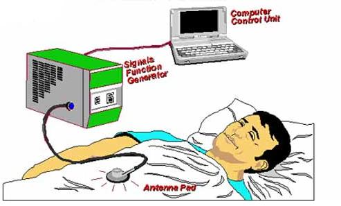

|
Scalar Electromagnetic Healing  Between two scalar potentials, interferometry is: Production of gradients in the 3-space point values Force does not exist until the gradient couples to an observable mass. There are no E-fields and B-fields as such in the massless vacuum, but only potential gradients. As previously stated, in 1903 E. T. Whittaker, a well-known mathematical physicist, showed that a scalar potential can be mathematically decomposed into a set of peculiar EM wavepairs in a harmonic set. (see Figure 12) These “hidden waves” are longitudinal EM waves, arranged in conjugate pairs with the pairs also arranged in a harmonic set. In each wavepair, there is an ordinary (forward-time) longitudinal EM wave (outgoing in 3-space from the interacting/observing charge), coupled to its phase conjugate replica (time-reversed twin). Rife was not using normal potentials and normal E and H fields—which as we discussed, only apply to observable material entities anyhow and thus could not be used to “see” far below the quantum threshold of least detectable material disturbance. His entire protocol was to get beyond those “material interception of EM energy” limitations. Unwittingly, Rife was using vacuum engines—involving structuring of the active vacuum as well as pure general relativity (GR) and pure structurings of spacetime geometry itself. He was electromagnetically using that part of GR that the GR physicists have mostly only tried to produce by use of the weak gravitational force. In GR, the ST geometry itself is active, dynamic, energetic, and structuring! In higher symmetry electrodynamics, the ST geometry itself is powerfully active, dynamic, energetic, and structuring! It is not at all just a "passive spacetime" as classical electrodynamics assumes. However, all living systems already use this "infolded" bidirectional, longitudinal wavepair EM in their ongoing living functions . Just as they used frequency modulation, EM signals, EM oscillations, etc. before we even had an electrodynamics or a physics, living systems do use the infolded EM (and vacuum engines) in all their living functions, and particularly in their cellular regeneration and restoration (R&R) system , as contrasted to their immune system. The immune system cells are the fighters and the debris scavengers/cleaners. They go after the hostile invaders, fight them, and usually win—littering the battlefield with the debris. Then the immune system scavenger cells clean up the residue. No vaccine, drug, herb, vitamin, or mineral heals the body, although certainly they can enhance or aid the body's healing process. Each does carry its individual resident vacuum engine, and when absorbed by the cell, this added vacuum engine contributes to the resident vacuum engine in the cell by summing with it. To restore the damaged cells back to normal (i.e., to heal), the R&R system uses a novel kind of extended electrodynamics with infolded vacuum engines, and it uses a novel kind of optical phase conjugate pumping, in the time domain rather than just 3-space. The magic “unified field theory” so long sought by scientists, has long been utilized by the regeneration and restoration system of the body in its minute-to-minute and day-to-day healing and restoring actions. Electrodynamic force fields implicitly define primarily only translation effects upon charges or masses, in their very definitions. With normal EM, usually one will get reradiation of the absorbed energy, or partial reradiation of the absorbed energy accompanied with recoil of the absorbing mass, or no reradiation but recoil of the mass. |